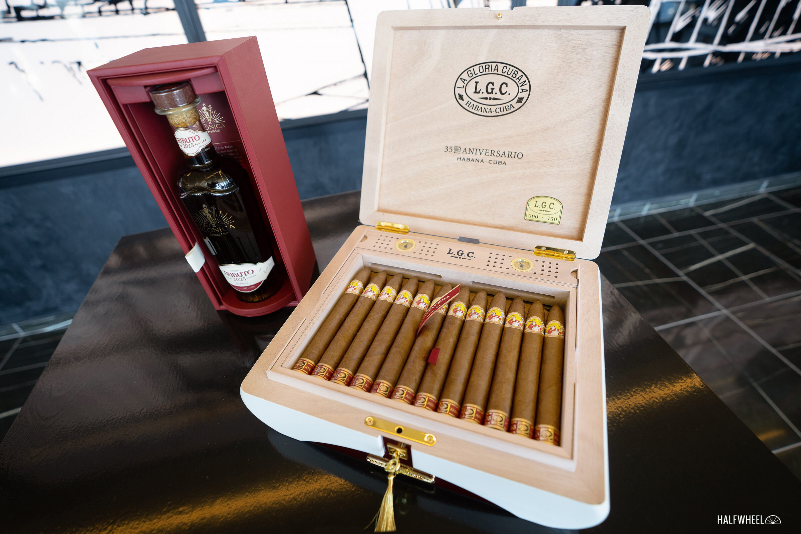

ラ・カーサ・デル・ハバノ（LCDH）の35周年を記念する限定ヒュミドール「ラ・グロリア・クバーナ 35アニベルサリオ」が、10月6日にスイスのLCDH10店で発売されました。Halfwheelが報じました。2025年のフェスティバル・デル・ハバノで発表されていた品の実売開始です。
ヒュミドールにはロドルフォ型（180mm×47）の葉巻を35本収納し、750台限定。価格はCHF 3,850です。
同日、ロメオ・イ・フリエタ「アマンテス」の20本箱（CHF 1,288）も発売されました。

写真：Halfwheel — LCDH35周年記念ヒュミドール
ラ・カーサ・デル・ハバノ（LCDH）の35周年を記念する限定ヒュミドール「ラ・グロリア・クバーナ 35アニベルサリオ」が、10月6日にスイスのLCDH10店で発売されました。Halfwheelが報じました。2025年のフェスティバル・デル・ハバノで発表されていた品の実売開始です。
ヒュミドールにはロドルフォ型（180mm×47）の葉巻を35本収納し、750台限定。価格はCHF 3,850です。
同日、ロメオ・イ・フリエタ「アマンテス」の20本箱（CHF 1,288）も発売されました。